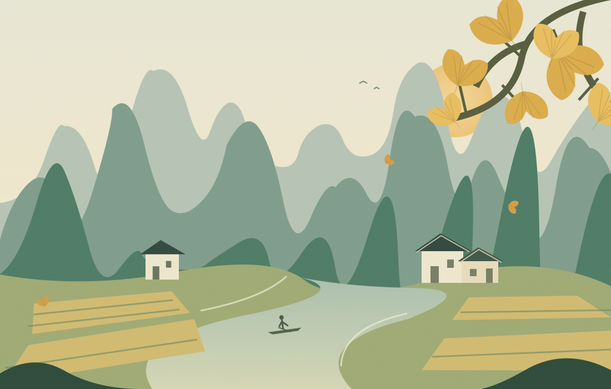

01—03晚
❧ 2026 · 桂林4天3晚亲子自驾行程
把日子放慢，
去看一场金色的秋天。
全程住和舍湖畔，带孩子看银杏、游田园。
慢节奏，亲子休闲，不赶场。
11月14日 — 11月17日周六出发 · 周二回家
看看每天怎么玩 4 天 3 晚 · 深圳出发 · 七座 MPV
目的地 / GUANGXI桂林 · 海洋乡 · 遇龙河
慢慢走
好好玩
山水主题插画 · 非景点实拍好好玩
5 大 2 小一家七口，一起出发
照顾长辈与孩子68岁长辈 · 5岁半与8岁孩子
每天留出休息时间短距离散步 · 午休优先
全程和舍湖畔三晚不换房 · 每天轻装出游
OUR LITTLE JOURNEY
同一民宿连住 3 晚一路向秋天，也从容回家。
深圳D1出发 · D4回家
→和舍湖畔全程住宿 · 休整放空
⇄海洋乡D2往返 · 银杏古村
／遇龙河D3往返 · 旧县骑行
三晚都住和舍湖畔度假民宿，不换房；每天按体力安排游玩，17日12:30启程返深。
FOUR DAYS, AT OUR OWN PACE
四天的安排，舒服比赶路重要。
11.14—11.17 · 深圳自驾 · 全程和舍湖畔度假民宿；走累了，就坐下来。
STAY WELL, TRAVEL WELL
3 间房 × 3 晚住得方便，旅程就轻松一半。
11月14日入住，11月17日离开；全程和舍湖畔度假民宿，三晚不换房。
SLOW慢游
轻装往返 · 休息优先
每天出游，都有休息的余地。
15日08:00出发看银杏，15:10回民宿；16日09:30出发去旧县，傍晚返回；17日早餐后行李装车，12:30启程返深。
不换房不赶场亲子休闲
房间与入住安排以实际订单为准
住宿统一为和舍湖畔度假民宿。沿用三间房×三晚的预算口径，金额可按实际订单修改；出发前确认入住人数、房间、早餐和停车入口。
A LITTLE BUDGET PLANNER全家的花费，
全家的花费，
心里先有个数。
调整右侧金额，估算七人总费用。
预算为估算，不是商家报价。
七人预计总费用¥8,000约 ¥1,143 / 人
修改仅保存在当前浏览器，不会同步给家人。
BEFORE WE HIT THE ROAD
装好行李，也装好安心。
每个人在自己的手机上勾选。完成状态仅保存于当前浏览器。
0 / 16项已准备
餐饮、天气与行程资料
吃饭：早餐选米粉、粥、鸡蛋，辣椒另放。正餐选清炖鸡鸭、蒸蛋、豆腐与蔬菜。给孩子另点不含白果的汤；白果煮熟也不能完全消除毒素，长辈也应少量食用。
天气与叶色：本页不是实时天气或交通服务。出发前向民宿确认海洋乡叶色实拍；每天出门前查看天气、导航和现场通知。
行程时间：按本次提供的计划展示，不代表实时车程。14日若晚于16:00抵达，可取消湖边散步；17日12:30启程返深，预留2—3次服务区休整，留意晚高峰，抵达时间以实时导航为准。
行程按家庭提供的安排更新：2026年11月11日。餐厅特色与停车信息沿用所给计划，营业及到店情况以当天为准。页面插画为原创主题插画。